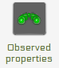

Registration of new sensors¶
From the “services” drop down button of the admin interface (http://localhost/istsos/admin ) choose the desired instance.
Warning
Before registering new sensors it’s advised to initialize observed properties and unit of measures.
Define new observed properties with the GUI¶
Define an observed property
Fill in the form using appropriate information.
Example
| Name: air-temperature |
| Definition URN: urn:ogc:def:parameter:x-istsos:1.0:meteo:air:temperature |
| Description: air temperature at 2 meters above terrain |
| Correct Quality Index: Between -60 and 100 |
Define new unit of measure with the GUI¶
Define a unit of measure
Fill in the form using appropriate information.
Example
| Code: mm |
| Description: millimeter |
Registering new procedure from scratch with the GUI¶
Add a new procedure (sensor)

Warning
Once a procedure is created the outputs (observed properties) cannot be changed.
Fill in the form using appropriate information.
Note
Optional parameters: Fill at your own need and willing
Note
Register the new sensor (procedure) pressing the “submit” button.
Example (minimal configuration)
| Name: T_LUGANO |
| Description: temperature weather station in Lugano |
| Keywords: weather, meteorological, IST |
| System type: insitu-fixed-point |
| Sensor type: PTC thermistors of the “switching” type |
| FOI name: LUGANO |
| EPSG: 4326 |
| Coordinates: x: 8.96127 y: 46.02723 z: 344.1 |
Outputs (confirm the outputs pressing the “add” button):
| Observed property: urn:ogc:def:parameter:x-istsos:1.0:meteo:air:temperature |
| Unit of measure: °C |
| Description (optional): conversion from resistance to temperature |
| quality index check (optional): Between / from -40 to +60 |
Register a new sensor by copying metadata from an existing sensor using the “copy from”¶
Look at the tool for “copy configuration from existing procedure”. Choose the procedure T_LUGANO and press “Fill form”

Select an existing sensor (procedure) from a given service and offering and then press the fill form button.
At minimal you shall use a new sensor Name and Description. If needed you can change the fields, in particular the Outputs section.
Note
before of adding the new observed property remove all the existng that are no more needed (e.g.: if you copy from a sensor which observes temperature and you want to create one observing precipitation, first you have to remove the temperature from the outputs and then add the precipitation.)
Warning
Procedures with multiple observed properties
Is it possible to add new procedures observing more than one properties, but in istSOS this means that for each observation instant we have a list all the observed properties values.
e.g.: if a procedure that observes temperature (T), humidity (H) and rain (R) is created the time series will always have a list of 3 values [T,H,R] for each instant. If you try to insert an observation with two only values it will raise an exception.
Verify the inserted procedures using the administration interface¶
Check your procedures by accessing the “Procedures” panel.

You will see a table showing an abstract of all the inserted procedures. By clicking on the name you will be able to enter the details metadata that you configured during the procedure registration.
Note
The “Procedures” panel not only allows for procedures and metadata exploration but also allows details modification. The only exception are the outputs parameters which cannot be modified.
Verify the inserted procedures using the Sensor Observation Service requests¶
Try to execute a getCapabilities request to verify if procedures are now available. You can use the “Requests” test page where some samples are already present.
http://localhost/istsos/admin/requests
Select your desired service and then choose “GET > GetCapabilities” option and modify the section parameter so that it to contain just the “contents” option the request to be like this:
http://localhost/istsos/demo?request=getCapabilities§ion=contents&service=SOS
Let’s execute a describeSensor request to verify that the procedure description is available, here we use T_LUGANO for the sensor name but you should replace it with the name of your procedure:
Download istSOS
Table Of Contents
- Registration of new sensors
- Define new observed properties with the GUI
- Define new unit of measure with the GUI
- Registering new procedure from scratch with the GUI
- Register a new sensor by copying metadata from an existing sensor using the “copy from”
- Verify the inserted procedures using the administration interface
- Verify the inserted procedures using the Sensor Observation Service requests